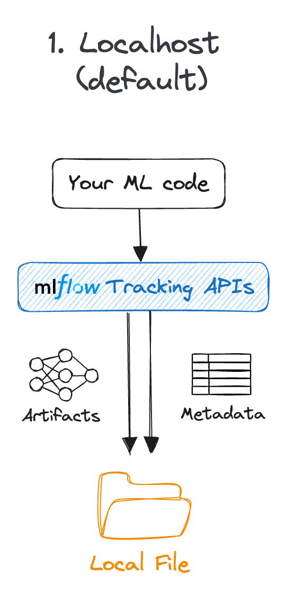

Experiment tracking with MLflow
Content from the webinar slides for easier browsing.
Experiment tracking
Lots of moving parts
AI experiments come with a lot of components:
- Datasets
- Model architectures
- Hyperparameters
While developing an efficient model, various datasets will be trained on various architectures tuned with various hyperparameters.
Challenging tracking
*hp = hyperparameter
How did we get performance19 again? 🤯
Experiment tracking tools
The solution to this complexity is to use an experiment tracking tool such as MLflow and, optionally, a data versioning tool such as DVC.
See our webinar on DVC.
MLflow overview
Platform for AI life cycle

Use cases
- Compare algorithms
- Keep track of pipelines
- Generate SHAP plots (relative contributions of features to the prediction)
- Track models at checkpoints
- Compare models with different datasets
- Track hyperparameter tuning experiments
- Visualize plots of logged metrics in UI
- Keep models and model versions in a registry
FOSS & compatible
- Open-source
- Works with any ML or DL framework
- Vendor-neutral if you run a server on a commercial platform
- Can be combined with dvc for dataset versioning
- Works with any hyperparameter tuning framework ➔ e.g. integration with Optuna
integration with Ray Tune
integration with hyperopt
Used by proprietary tools
The foundation of many proprietary no-code/low-code tuning platforms that just add a layer on top to interface with the user with text rather than code.
e.g. Microsoft Fabric, FLAML
Limitations
- Messy documentation (code typos, circular, confusing, many “Getting started” sections)
uvnot fully integrated (not supported in MLflow projects)- The UI can be unstable and inconsistent
- Servers are not very resilient to by bad workflows, deletion and recreation of files, etc.
- Nested runs don’t get logged as children runs if the workflow is not followed carefully
Tracking with MLflow
Install MLflow
(With uv)
Create a uv project:
uv init --bareInstall MLflow:
uv add mlflowuv is an amazing Python projects/versions/virtual envs manager and I recommend using it on your machine. However, it is currently not supported on the Alliance clusters where you need to keep using pip or risk issues with undetected modules.
While installing MLflow with uv works without issues, MLflow models artifacts contain a conda.yaml file which expects pip.
To prevent getting the annoying warning:
WARNING mlflow.utils.environment: Failed to resolve installed pip version.
``pip`` will be added to conda.yaml environment spec without a version specifier.each time you log a model, you can install pip even if you never use it (or you can just ignore the warnings):
uv add pipDefinitions in MLflow context
Parent run:
One experiment (e.g. optimization task) containing multiple children (nested) runs.
Child run:
Individual execution of a model training event.
Model signature:
Description of a model input and output data structure, data types, and features names.
Model artifacts:
Outputs of model training process: trained model, checkpoints, and associated metadata.
Model Uniform Resource Identifier (URI):
Unique sequence of characters that identifies a model artifacts.
MLflow tracking workflow
- Create an experiment
- Launch an MLflow server
- Open the user interface in a browser to visualize the logged data
- Log tracking data (e.g. train or tune a model)
MLflow tracking setup
You can setup MLflow tracking locally or on a remote server, using databases or not1.
In the next slides, I am breaking down the workflow for the various configurations.
Create an experiment

Local
import mlflow
mlflow.set_experiment("<experiment-name>")Logs get stored in an mlruns directory.
This method will be deprecated, so prefer the use of a database.

Local with database
import mlflow
mlflow.set_tracking_uri(
"sqlite:///<database-name>.db"
)
mlflow.set_experiment("<experiment-name>")Logs get stored in a <database-name>.db file.
Here we use SQLite which works well for a local database.

Remote tracking server
(For team development)
import mlflow
mlflow.set_tracking_uri("http://<host>:<port>")
mlflow.set_experiment("<experiment-name>")Launch MLflow server
Local
mlflow serverThe server listens on http://localhost:5000 by default.
To listen to another port (e.g. 8080):
mlflow server --port 8080
Local with database
mlflow server \
--backend-store-uri \
sqlite:///<database-name>.dbDefault port is 5000. To use another port (e.g. 8080):
mlflow server \
--backend-store-uri \
sqlite:///<database-name>.db \
--port 8080
Remote tracking server
mlflow server \
--host <host> \
--backend-store-uri \
postgresql+psycopg2://<username>:<password>@<host>:<port>/mlflowdb \
--port <port>Here we use PostgreSQL which works well to manage a database in a collaborative remote client-server system.
(Requires installing the psycopg2 package.)
Alliance clusters
- Launch the MLflow server in the background (with a trailing
&) as part of your job. - Use the local workflow with the additional argument
--host 0.0.0.0.
Example job:
#!/bin/bash
#SBATCH ...
#SBATCH ...
mlflow server \
--backend-store-uri sqlite:///<database-name>.db --host 0.0.0.0 &
python <script>.pyAccess the UI
Open http://<host>:<port> in a browser to view logs in the UI.
Example: for a local server on port 5000 (the default), open http://localhost:5000.
Alliance clusters
Once the job is running, you need to create a connection between the compute node running the server and your computer.
First, you need to find the hostname of the compute node running the server. This is the value under NODELIST for your job when you run sq.
Then, from your computer, run the SSH tunnelling command:
ssh -N -f -L localhost:5000:<node>:5000 <user>@<cluster>.alliancecan.caReplace <node> by the compute node you identified, <user> by your user name, and <cluster> by the name of the Alliance cluster (e.g. fir).
Finally, open a browser (on your computer) and go to http://localhost:5000.
Log tracking data
Define and run the experiment you want to track.
Examples:
Train a model,
Tune hyperparameters,
Run a model with different datasets,
…
Use case 1: model tracking
Benefits of using MLflow
- Monitor model metrics (e.g. loss, accuracy)
- Monitor system metrics (e.g. GPU, memory)
- Save checkpoints with metrics
- Record hyperparameters and optimizer settings
- Snapshot library versions for reproducibility
Workflow
- Create an experiment
- Launch an MLflow server
- Open the user interface in a browser to visualize the logged data
- Log tracking data:
- Prepare data
- Define model
- Define training parameters and optimizer
- Train
Model demo
modified from MLflow website
We need several packages for this demo. I create a bare uv project:
uv init --bareand install the packages in its virtual environment:
uv add mlflow psutil torch torchvisionI also install ptpython because I like to use it instead of the default Python shell, but this is not necessary to run the demo (which is why I am adding it in the dev group):
uv add --dev ptpythonI can now launch ptpython (or python) to run the code:
uv run ptpythonCreate an experiment
import mlflow
mlflow.set_tracking_uri("sqlite:///demos.db")
mlflow.set_experiment("model_tracking_demo")
mlflow.config.enable_system_metrics_logging()
mlflow.config.set_system_metrics_sampling_interval(1)You can see that the database file demos.db gets created.
Launch MLflow server
In Bash (not Python):
uv run mlflow server --backend-store-uri sqlite:///demos.dbAccess the UI
Open http://localhost:5000 in a browser to view logs in the UI.
You can see our model_tracking_demo experiment.
Click on it to see the interface where the runs will be logged as we train our model.
Log tracking data
In this demo, we log a checkpoint and its metrics after each epoch, as well as the final model for the training of a basic PyTorch classification neural network on the classic Fashion-MNIST dataset.
Prepare data
import torch
from torch.utils.data import DataLoader
from torchvision import datasets, transforms
# Define device
device = torch.device("cuda" if torch.cuda.is_available() else "cpu")
# Load and prepare data
transform = transforms.Compose(
[transforms.ToTensor(), transforms.Normalize((0.1307,), (0.3081,))]
)
train_dataset = datasets.FashionMNIST(
"data", train=True, download=True, transform=transform
)
test_dataset = datasets.FashionMNIST("data", train=False, transform=transform)
train_loader = DataLoader(train_dataset, batch_size=64, shuffle=True)
test_loader = DataLoader(test_dataset, batch_size=1000)Define model
import torch.nn as nn
class NeuralNetwork(nn.Module):
def __init__(self):
super().__init__()
self.flatten = nn.Flatten()
self.linear_relu_stack = nn.Sequential(
nn.Linear(28 * 28, 512),
nn.ReLU(),
nn.Linear(512, 512),
nn.ReLU(),
nn.Linear(512, 10),
def forward(self, x):
x = self.flatten(x)
logits = self.linear_relu_stack(x)
return logits
model = NeuralNetwork().to(device)Set training conditions
import torch.optim as optim
# Training parameters
params = {
"epochs": 4,
"learning_rate": 1e-3,
"batch_size": 64,
"optimizer": "SGD",
"model_type": "MLP",
"hidden_units": [512, 512],
}
# Define optimizer and loss function
loss_fn = nn.CrossEntropyLoss()
optimizer = optim.SGD(model.parameters(), lr=params["learning_rate"])Train
with mlflow.start_run(run_name="run_1") as run:
# Log training parameters
mlflow.log_params(params)
for epoch in range(params["epochs"]):
model.train()
train_loss, correct, total = 0, 0, 0
for batch_idx, (data, target) in enumerate(train_loader):
data, target = data.to(device), target.to(device)
# Forward pass
optimizer.zero_grad()
output = model(data)
loss = loss_fn(output, target)
# Backward pass
loss.backward()
optimizer.step()
# Calculate metrics
train_loss += loss.item()
_, predicted = output.max(1)
total += target.size(0)
correct += predicted.eq(target).sum().item()
# Log batch metrics (every 100 batches)
if batch_idx % 100 == 0:
batch_loss = train_loss / (batch_idx + 1)
batch_acc = 100.0 * correct / total
mlflow.log_metrics(
{"batch_loss": batch_loss, "batch_accuracy": batch_acc},
step=epoch * len(train_loader) + batch_idx,
# Calculate epoch metrics
epoch_loss = train_loss / len(train_loader)
epoch_acc = 100.0 * correct / total
# Validation
model.eval()
val_loss, val_correct, val_total = 0, 0, 0
with torch.no_grad():
for data, target in test_loader:
data, target = data.to(device), target.to(device)
output = model(data)
loss = loss_fn(output, target)
val_loss += loss.item()
_, predicted = output.max(1)
val_total += target.size(0)
val_correct += predicted.eq(target).sum().item()
# Calculate and log epoch validation metrics
val_loss = val_loss / len(test_loader)
val_acc = 100.0 * val_correct / val_total
# Log epoch metrics
mlflow.log_metrics(
{
"train_loss": epoch_loss,
"train_accuracy": epoch_acc,
"val_loss": val_loss,
"val_accuracy": val_acc,
},
step=epoch,
)
# Log checkpoint at the end of each epoch
mlflow.pytorch.log_model(
model,
name=f"fashionmnist_1_checkpoint_{epoch}"
print(
f"Epoch {epoch+1}/{params['epochs']}, "
f"Train Loss: {epoch_loss:.4f}, Train Acc: {epoch_acc:.2f}%, "
f"Val Loss: {val_loss:.4f}, Val Acc: {val_acc:.2f}%"
# Log the final trained model
model_info = mlflow.pytorch.log_model(
model,
name="fashionmnist_1_trained"
)Visualize metrics
Go to the UI in the browser. If you haven’t done so yet, click on the experiment we called model_tracking_demo.
Then click on the run we called run_1 (if you don’t name runs, they get automatically generated names).
Finally go to the Model metrics tab to see the metrics logged in real time.
The System metrics tab allows you to monitor your resource usage.
Alternatively, you can click on the experiment and click on  (Chart view button).
(Chart view button).
This is a great method if you want to compare multiple runs.
Create a new run
We can create new runs by training the model again:
with mlflow.start_run(run_name="run_2") as run:
# Log training parameters
mlflow.log_params(params)
for epoch in range(params["epochs"]):
model.train()
train_loss, correct, total = 0, 0, 0
for batch_idx, (data, target) in enumerate(train_loader):
data, target = data.to(device), target.to(device)
# Forward pass
optimizer.zero_grad()
output = model(data)
loss = loss_fn(output, target)
# Backward pass
loss.backward()
optimizer.step()
# Calculate metrics
train_loss += loss.item()
_, predicted = output.max(1)
total += target.size(0)
correct += predicted.eq(target).sum().item()
# Log batch metrics (every 100 batches)
if batch_idx % 100 == 0:
batch_loss = train_loss / (batch_idx + 1)
batch_acc = 100.0 * correct / total
mlflow.log_metrics(
{"batch_loss": batch_loss, "batch_accuracy": batch_acc},
step=epoch * len(train_loader) + batch_idx,
# Calculate epoch metrics
epoch_loss = train_loss / len(train_loader)
epoch_acc = 100.0 * correct / total
# Validation
model.eval()
val_loss, val_correct, val_total = 0, 0, 0
with torch.no_grad():
for data, target in test_loader:
data, target = data.to(device), target.to(device)
output = model(data)
loss = loss_fn(output, target)
val_loss += loss.item()
_, predicted = output.max(1)
val_total += target.size(0)
val_correct += predicted.eq(target).sum().item()
# Calculate and log epoch validation metrics
val_loss = val_loss / len(test_loader)
val_acc = 100.0 * val_correct / val_total
# Log epoch metrics
mlflow.log_metrics(
{
"train_loss": epoch_loss,
"train_accuracy": epoch_acc,
"val_loss": val_loss,
"val_accuracy": val_acc,
},
step=epoch,
)
# Log checkpoint at the end of each epoch
mlflow.pytorch.log_model(
model,
name=f"fashionmnist_2_checkpoint_{epoch}"
print(
f"Epoch {epoch+1}/{params['epochs']}, "
f"Train Loss: {epoch_loss:.4f}, Train Acc: {epoch_acc:.2f}%, "
f"Val Loss: {val_loss:.4f}, Val Acc: {val_acc:.2f}%"
# Log the final trained model
model_info = mlflow.pytorch.log_model(
model,
name="fashionmnist_2_trained"
)Use case 2: tuning
Hyperparameter tuning
The goal of hyperparameter tuning is to find the optimal set of hyperparameters that maximize a model’s predictive accuracy and performance.
➔ Find the right balance between high bias (underfitting) and high variance (overfitting) to improve the model’s ability to generalize and perform well on new, unseen data.
Tuning frameworks
Hyperparameters optimization used to be done manually following a systematic grid pattern. This was extremely inefficient.
Nowadays, there are many frameworks that do it automatically, faster, and better.
Example:
Workflow
- Create an experiment
- Launch an MLflow server
- Open the user interface in a browser to visualize the logged data
- Log tracking data:
- Prepare data
- Define an objective function
- Run an optimization task
Tuning demo
modified from MLflow website
For this demo, we will use optuna as the hyperparameter optimization framework, so we need to install it (in Bash, not Python):
uv add optunaCreate an experiment
import mlflow
mlflow.set_tracking_uri("sqlite:///demos.db")
mlflow.set_experiment("tuning_demo")We are using the same database, but you could of course create a new one.
Launch MLflow server
In Bash/zsh (not in Python!) at root of project.
mlflow server --backend-store-uri sqlite:///demos.dbIf you are using the same database as in the previous demo and you kept the server running, you don’t have to do anything.
Access the UI
Open http://localhost:5000 in a browser.
Select the experiment tuning_demo.
Log tracking data
In this demo, we train a random forest regressor model on the classic scikit-learn California housing dataset and tune its hyperparameters (random forest max depth, number of estimators, and max features) by minimizing the mean squared error between the predicted and validation values using the hyperparameter optimization package optuna.
Prepare data
import sklearn
from sklearn.model_selection import train_test_split
from sklearn.datasets import fetch_california_housing
X, y = fetch_california_housing(return_X_y=True)
X_train, X_val, y_train, y_val = train_test_split(X, y, random_state=0)Objective function
Define an objective function:
def objective(trial):
# Setting nested=True will create a child run under the parent run.
with mlflow.start_run(
nested=True,
run_name=f"trial_{trial.number}"
) as child_run:
rf_max_depth = trial.suggest_int("rf_max_depth", 2, 32)
rf_n_estimators = trial.suggest_int(
"rf_n_estimators",
50,
300,
step=10
)
rf_max_features = trial.suggest_float("rf_max_features", 0.2, 1.0)
params = {
"max_depth": rf_max_depth,
"n_estimators": rf_n_estimators,
"max_features": rf_max_features,
}
# Log current trial's parameters
mlflow.log_params(params)
regressor_obj = sklearn.ensemble.RandomForestRegressor(**params)
regressor_obj.fit(X_train, y_train)
y_pred = regressor_obj.predict(X_val)
error = sklearn.metrics.mean_squared_error(y_val, y_pred)
# Log current trial's error metric
mlflow.log_metrics({"error": error})
# Log the model file
mlflow.sklearn.log_model(regressor_obj, name="calhousing_1")
# Make it easy to retrieve the best-performing child run later
trial.set_user_attr("run_id", child_run.info.run_id)
return errorOptimization task
Then run an optimization task:
import optuna
# Create a parent run that contains all child runs for different trials
with mlflow.start_run(run_name="calhousing_1_optimization_1") as run:
# Log the experiment settings
n_trials = 5
mlflow.log_param("n_trials", n_trials)
study = optuna.create_study(direction="minimize")
study.optimize(objective, n_trials=n_trials)
# Log the best trial and its run ID
mlflow.log_params(study.best_trial.params)
mlflow.log_metrics({"best_error": study.best_value})
if best_run_id := study.best_trial.user_attrs.get("run_id"):
mlflow.log_param("best_child_run_id", best_run_id)Visualize trials errors
Go to the UI in the browser. If you haven’t done so yet, click on the experiment we called tuning_demo.
Then click on the + sign next to our optimization experiment to expand it.
Finally click on (Chart view button) to compare the trials.
Use case 3: model registry
Benefits
- Tracks development pipelines of models
- Tracks model versions
- Central place for all models (local or remote for collaborations)
- Aliases, tags, annotations, metadata associated with models
Register models
Whenever you care about a model, you should add it to the model registry.
You can do so when you log it by adding a value to the registered_model_name argument of the log_model function.
But often, you will do so afterwards, once you have looked at the logs and decided that they look good.
Register models in the UI
Version 1
- Click on the experiment name containing the model
- Click on Models in the left menus
- Click on the model to register
- Click on the Register model button in top right corner
- In drop-down menu click Create New Model
- Enter name of model
- Click Register
Versions 2+
- In drop-down menu select model for which you want to create a new version
- Click Register
Register programmatically
You can also register models programmatically.
From model ID:
- Click on the experiment name containing the model
- Click on Models in the left menus
- Click on the model to register
Then run:
mlflow.register_model("models:/<model-id>", "<name-of-registered-model>")<model-id>= the letters and digits after Model ID<name-of-registered-model>= the name you give to your registered model
From run ID:
Navigate to and click on the model to register.
Then run:
mlflow.register_model(
"runs:/<source-run-id>/<model-name>",
"<name-of-registered-model>"
)<source-run-id>= the digits in top right corner after Source run ID<model-name>= the name of the model in top left corner (the model you just clicked on)<name-of-registered-model>= the name you give to your registered model
Load registered model
You can then load any of your registered models with:
mlflow.<flavour>.load_model(
"models:/<your_registered_model_name>/<model_version>"
)<flavour> = any ML/DL flavour such as pytorch, sklearn, or any other named flavour (predefined code for supported ML/DL frameworks), or a custom PyFunc for unsupported frameworks.
Model registry demo
In the previous demos, we logged a number of models:
- the checkpoints of both our FashionMNIST runs
- the final models of those two runs
- the trials (child runs) of the California housing tuning experiment
Let’s register some of these models.
Register models in the UI
FashionMNIST:
- Click on model_tracking_demo
- Click on Models in the left menus
- Click on fashionmnist_1_trained
- Click on the Register model button in top right corner
- In drop-down menu click Create New Model
- Enter: “fashionmnist_1”
- Click Register
California housing:
- Click on tuning_demo
- Click on Models in the left menus
- Click on the calhousing_1 line corresponding to our best trial run
- Click on the Register model button in top right corner
- In drop-down menu click Create New Model
- Enter: “calhousing_1_best”
- Click Register
Register models in Python
In the UI:
- Click on model_tracking_demo
- Click on Models in the left menus
- Click on fashionmnist_2_trained
Then run:
mlflow.register_model(
"models:/m-a7a4cd35cc4c4fe4b2e3d839b1307b5d",
"fashionmnist_2"
)In the UI:
- Click on model_tracking_demo
- Click on Models in the left menus
- Click on fashionmnist_2_trained
Alternatively:
mlflow.register_model(
"runs:/1a2844d0125e40cfac528ae44c4ae76a/fashionmnist_2_trained",
"fashionmnist_2"
)Load registered models
You can load back any registered model by its name and version number:
fashionmnist_1 = mlflow.pytorch.load_model("models:/fashionmnist_1/1")
calhousing_1_best = mlflow.sklearn.load_model("models:/calhousing_1_best/1")Let’s print the fashionmnist_1 model:
fashionmnist_1and the calhousing_1_best model:
calhousing_1_bestModels signatures
You might have noticed that we got the following warning at each model we logged:
WARNING mlflow.models.model: Model logged without a signature and input example.
Please set `input_example` parameter when logging the model to auto infer the model signature.Let’s dive into this.
Benefits of models signatures
Model signatures describe the schema of inputs and outputs.
They help in model understanding and define how the model should be used.
Input examples
Input examples illustrate the data type and format that should be used with models and ensures validation that the models work properly. MLflow can infer a model signature for a model from an input example.
The input example also provides a test for the model during logging. It thus a good practice to add an input example whenever a model is logged.
Example
Let’s go back to the objective function we defined in the tuning demo as an example and let’s add the first the first element of the X ndarray an input example.
When we define an objective function, we had the following:
def objective(trial):
# Setting nested=True will create a child run under the parent run.
with mlflow.start_run(
nested=True,
run_name=f"trial_{trial.number}"
) as child_run:
rf_max_depth = trial.suggest_int("rf_max_depth", 2, 32)
rf_n_estimators = trial.suggest_int(
"rf_n_estimators",
50,
300,
step=10
)
rf_max_features = trial.suggest_float("rf_max_features", 0.2, 1.0)
params = {
"max_depth": rf_max_depth,
"n_estimators": rf_n_estimators,
"max_features": rf_max_features,
}
# Log current trial's parameters
mlflow.log_params(params)
regressor_obj = sklearn.ensemble.RandomForestRegressor(**params)
regressor_obj.fit(X_train, y_train)
y_pred = regressor_obj.predict(X_val)
error = sklearn.metrics.mean_squared_error(y_val, y_pred)
# Log current trial's error metric
mlflow.log_metrics({"error": error})
# Log the model file
mlflow.sklearn.log_model(regressor_obj, name="calhousing_1")
# Make it easy to retrieve the best-performing child run later
trial.set_user_attr("run_id", child_run.info.run_id)
return errorLet’s add the additional input_example argument in:
mlflow.sklearn.log_model(regressor_obj, name="calhousing_1")And have it look like:
mlflow.sklearn.log_model(
regressor_obj,
name="calhousing_1",
input_example=X[[0]]
)def objective(trial):
# Setting nested=True will create a child run under the parent run.
with mlflow.start_run(
nested=True,
run_name=f"trial_{trial.number}"
) as child_run:
rf_max_depth = trial.suggest_int("rf_max_depth", 2, 32)
rf_n_estimators = trial.suggest_int(
"rf_n_estimators",
50,
300,
step=10
)
rf_max_features = trial.suggest_float("rf_max_features", 0.2, 1.0)
params = {
"max_depth": rf_max_depth,
"n_estimators": rf_n_estimators,
"max_features": rf_max_features,
}
# Log current trial's parameters
mlflow.log_params(params)
regressor_obj = sklearn.ensemble.RandomForestRegressor(**params)
regressor_obj.fit(X_train, y_train)
y_pred = regressor_obj.predict(X_val)
error = sklearn.metrics.mean_squared_error(y_val, y_pred)
# Log current trial's error metric
mlflow.log_metrics({"error": error})
# Log the model file
mlflow.sklearn.log_model(
regressor_obj,
name="calhousing_1",
input_example=X[[0]]
)
# Make it easy to retrieve the best-performing child run later
trial.set_user_attr("run_id", child_run.info.run_id)
return errorIf we re-run our optimization task now, we don’t get any warnings about missing signatures anymore:
import optuna
# Create a parent run that contains all child runs for different trials
with mlflow.start_run(run_name="calhousing_1_optimization_1") as run:
# Log the experiment settings
n_trials = 5
mlflow.log_param("n_trials", n_trials)
study = optuna.create_study(direction="minimize")
study.optimize(objective, n_trials=n_trials)
# Log the best trial and its run ID
mlflow.log_params(study.best_trial.params)
mlflow.log_metrics({"best_error": study.best_value})
if best_run_id := study.best_trial.user_attrs.get("run_id"):
mlflow.log_param("best_child_run_id", best_run_id)Signature test
You can do a sanity check of your signature by running your input example in the model.
First, register the model and load it (let’s use the model we already registered):
calhousing_1_best = mlflow.sklearn.load_model("models:/calhousing_1_best/1")Then test the input example:
try:
result = calhousing_1_best.predict(X[[0]])
print("✅ Signature validation passed")
except Exception as e:
print(f"❌ Signature issue: {e}")✅ Signature validation passedIf you used a bad input sample, you will get some informative error:
try:
result = calhousing_1_best.predict(X[0])
print("✅ Signature validation passed")
except Exception as e:
print(f"❌ Signature issue: {e}")❌ Signature issue: Expected 2D array, got 1D array instead:
array=[ 8.3252 41. 6.984127 1.0238096 322.
2.5555556 37.88 -122.23 ].
Reshape your data either using array.reshape(-1, 1) if your data has
a single feature or array.reshape(1, -1) if it contains a single sample.Use case 4: datasets tracking
Benefits
- Keep data and models together for reproducibility
- Keep data versions for traceability
- Record metadata and data sources
- Share data for collaborations (when using remote servers)
Supported data types
PandasDataset: Pandas DataFramesSparkDataset: Apache Spark DataFramesNumpyDataset: NumPy arraysPolarsDataset: Polars DataFramesHuggingFaceDataset: Hugging Face datasetsTensorFlowDataset: TensorFlow datasetsMetaDataset: metadata-only datasets (no actual data storage)
Non supported data types (e.g. torchvision datasets) need to be converted to supported types or logged via custom functions.
Example
import polars as pl
train_data = pl.DataFrame({"X": X_train, "y": y_train})
val_data = pl.DataFrame({"X": X_val, "y": y_val})
train_dataset = mlflow.data.from_polars(train_data, name="calhousing_train")
val_dataset = mlflow.data.from_polars(val_data, name="calhousing_val")
with mlflow.start_run():
mlflow.log_input(train_dataset, context="training")
mlflow.log_input(val_dataset, context="validation")Footnotes
Usage without databases will be deprecated at some point and is not recommended.↩︎